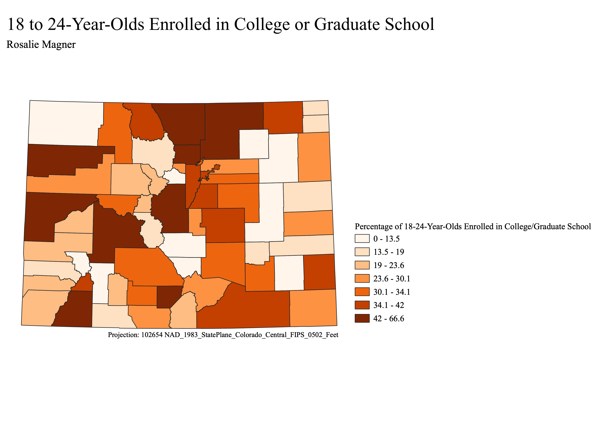

Homework 6: Census data choropleth
In this assignment I created a ratio using the field calculator in QGIS, dividing the number of 18–24-year-olds enrolled in college or graduate school by the total number of 18–24-year-olds in the county. I then multiplied this number by 100 to get a percentage.
The map shows, by county, the percentage of individuals in the 18-24 age group that are enrolled in college or graduate school.
Equal Count Classification
This classification model separates the data so that there is an equal number of counties in each bracket(represented by a different color). This can be useful when trying to get an even distribution of data across the map,
however, it does not highlight the disparities in the 18-24 age group college enrollment among the counties.

Natural Breaks Classification
This classification method separates the data in a way that more appropriately shows the differences in the college enrollment of the counties. This is a better suited method than equal count for my purpose of displaying what counties have significantly higher enrollment rates.

Pretty Breaks Classification
This mode of classification is the most suited for my map. It is similar to the natural breaks classification, however, it organizes the brackets in whole number percentages, which is much easier for the viewer to understand. The data is still separated in a way that shows
what counties have much higher enrollment rates in the 18-24 age group.

Data used for this project
Link to cleaned csv dataset on GitHub
Link to geoJSON on GitHub